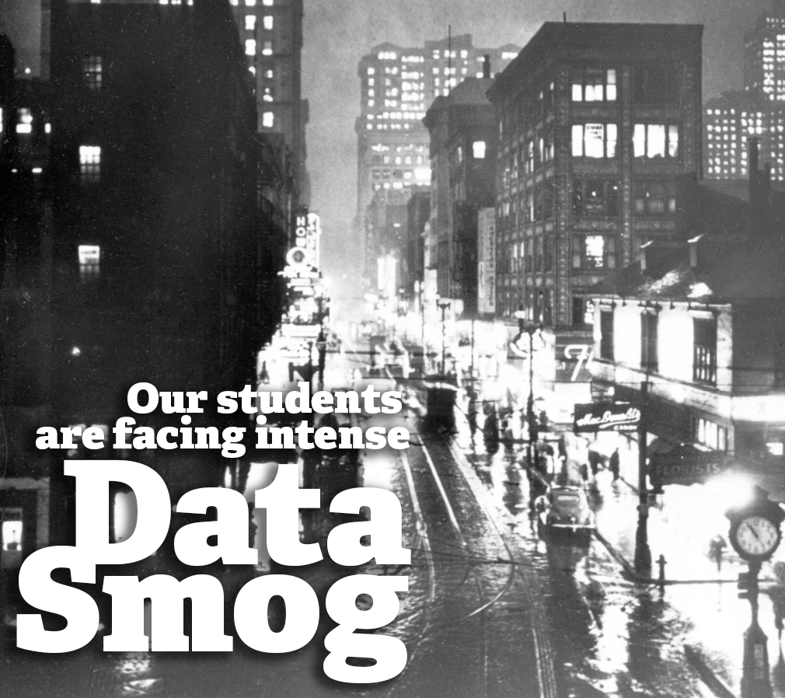

Jerry Yarnetsky
Web Services Librarian at
Miami University Libraries
Supplement materials for my 2021 Annual Report of Professional Activities
- Rank: Assistant Librarian
- Review Year: 4th
- Date of Hire: 1 January 2018
- CV: View CV or download pdf version
- Intended Area of Very Strong performance: Service

Philosophy of Librarianship
I am a member of a three-librarian team collaboratively overseeing our libraries’ web services. My concentration is on user experience— encompassing areas such as information architecture, content management, usability testing, and web accessibility. I also manage our frontline services such as our LibGuides publishing system and LibCal online reservation system. When our team’s work is at its best, you stop noticing it — it just works. Just as you’ve internalized driving a car, our library systems should be just as natural. The joy, or frustration, should come from your research, and not from our tools.
I believe this experience is critical, because the research required for our students’ educational journey is paradoxically both far easier and more difficult than ever before. For instance, doing a search for “education” through our libraries’ website takes just seconds, but returns 21.5 million items available to Miami students. Research material is more readily available than at any time in history and our students are absolutely overwhelmed with information. Journalist David Shenk coined this paradox “data smog.” Our students’ reaction to this data smog ranges from sheer panic to blind acceptance. This results in our students frequently grabbing the first remotely appropriate source they find.
This reaction is an indictment of our information environment that I take personally. I know I can be part of the solution by working continually to make our libraries’ online services as clear and useful as possible. Through listening to our community, testing our tools, and continually improving our services hopefully our students see some sunny days out of the data smog.
Shenk, D. (1997, May). Data smog. MIT’s Technology Review. p. 18.
Image for illustration
Corner of Liberty and Fifth Avenues 10:55 AM. (c.1940). Smoke Control Lantern Slide Collection, Historic Pittsburgh hosted by the University of Pittsburgh Library System. A photo from a series of images taken to document the city of Pittsburgh before and after smoke control ordinances were passed regulating the burning of coal.